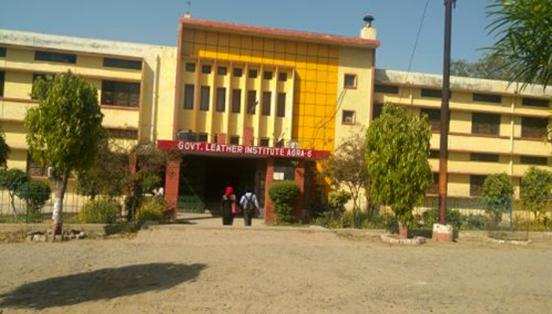
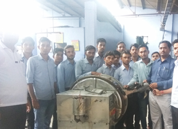
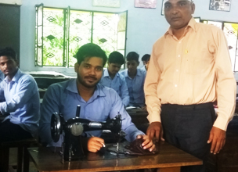

Government Leather Institute, Agra is a government technical institute established in 1962 and affiliated with BTEUP.
The institute provides quality diploma education in Leather Technology, Footwear Technology, Saddlery Technology &
Export Management, and Computer Science & Engineering. Our mission is to develop skilled professionals through
technical education, practical training, innovation, and industry collaboration.
Government Leather Institute, Agra is a prestigious government technical institute established in 1962.
The institute is affiliated with BTEUP and approved by AICTE.
It offers diploma courses in:
• Leather Technology
• Footwear Technology
• Saddlery Technology & Export Management
• Computer Science & Engineering



Government Leather Institute (GLI), Agra was established in 1962 by the Government of Uttar Pradesh.
The institute was founded to provide skilled technical manpower for the leather and footwear industry, which is one of the major industries in Agra.
Over the years, GLI has expanded its academic programs and improved its infrastructure to meet the changing needs of industry and technology.
The institute has trained thousands of students who are now working in various leather, footwear, and engineering organizations across India and abroad.
Today, Government Leather Institute, Agra is recognized as one of the leading technical institutes in Uttar Pradesh, offering quality education, practical training, and industry-oriented learning.